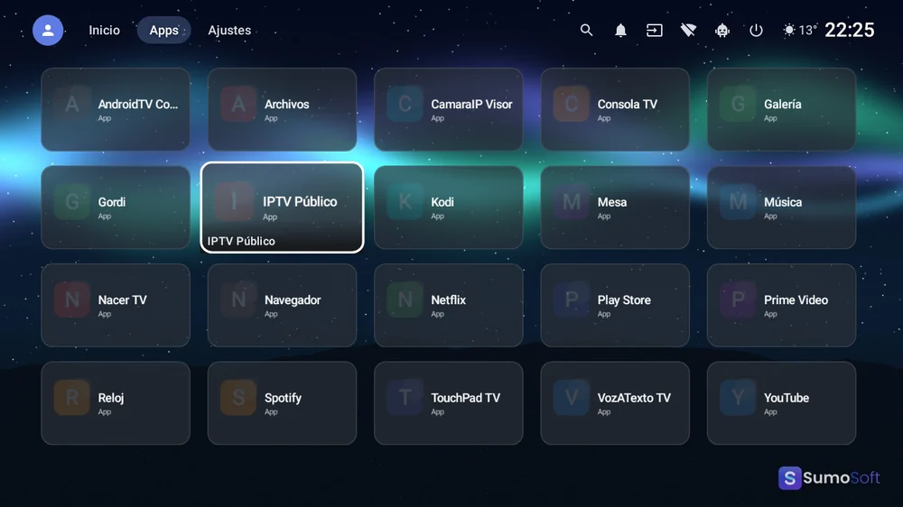
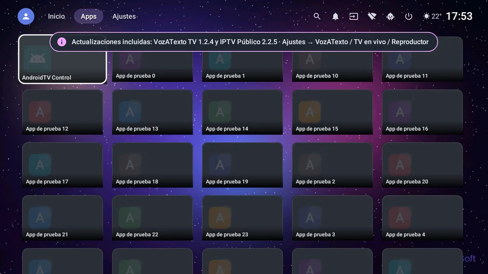
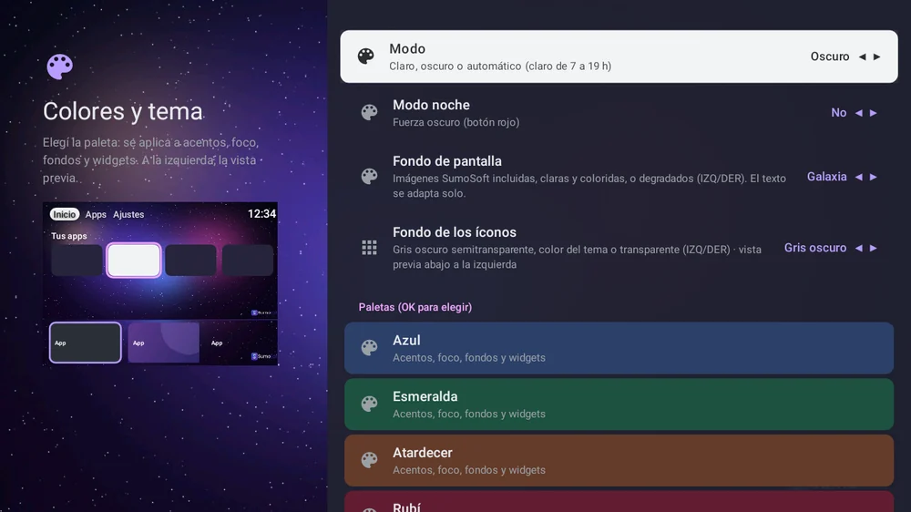
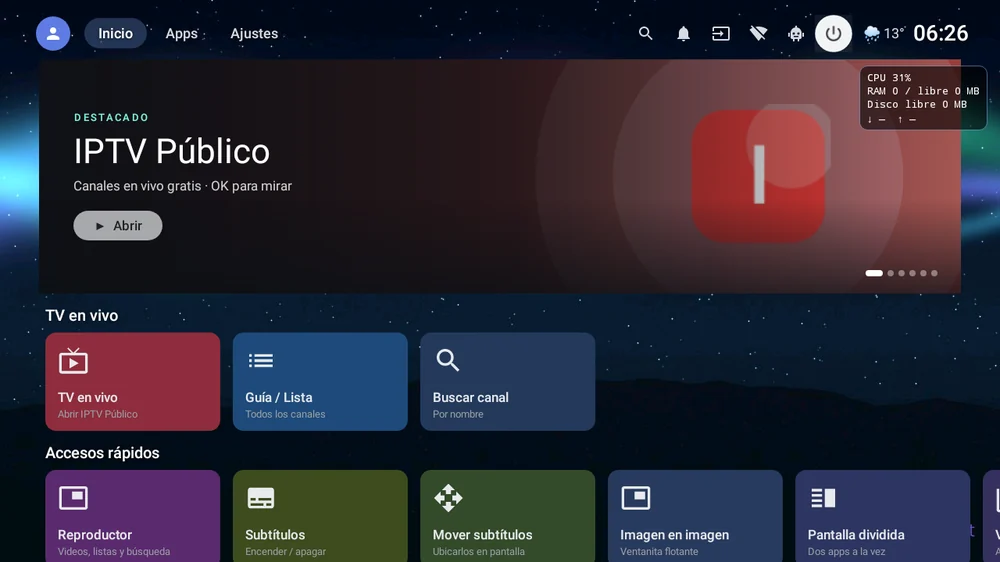
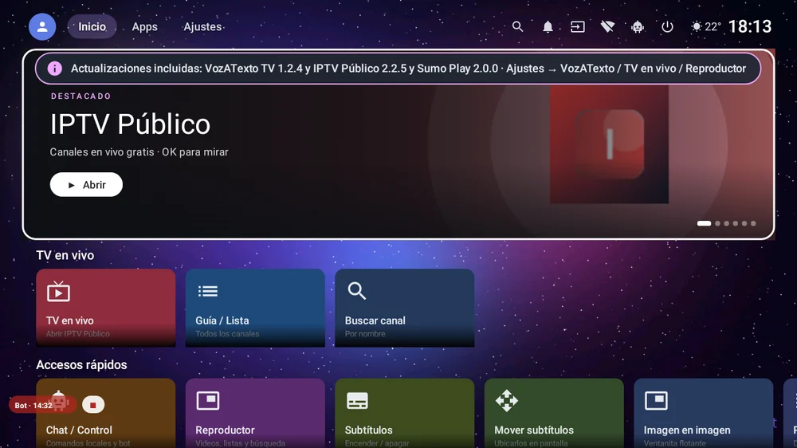
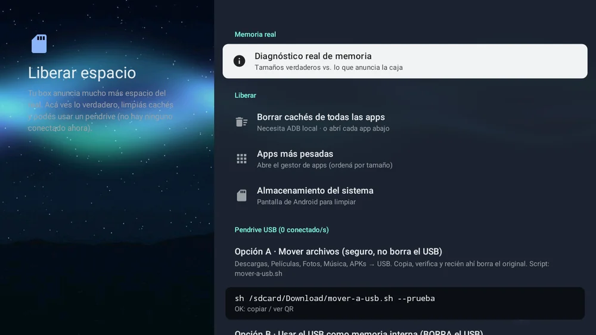

Inicio › Apps › Launcher TV Lite
Launcher TV Lite
Todas las funciones de Launcher TV, optimizado para equipos de 1 GB de RAM.
Todo Launcher TV, afinado para los TV box más humildes.
Pago seguro con Mercado Pago · Sin publicidad · Pago únicoBotón de arrepentimiento
Pago seguro · Podés arrepentirte dentro de los 10 días.
Sin publicidad. Nunca.Pagás una vez y la app es tuya: sin banners, sin videos que te hacen esperar, sin interrupciones. Por qué cobramos
¿Te aparece un aviso al instalar (Play Protect u «orígenes desconocidos»)? Cómo instalar paso a paso — celular y TV.


Inicio Lite 1.2.2: fondos nuevos

Apps con tiles opacos

Colores y 6 fondos nuevos

Chat amarillo grande sobre negro

Píldora Bot · mm:ss chiquita

Cómo usar Launcher TV LiteLo que la hace distinta
- 🪶 Mismas funciones que Launcher TV con menos memoria y arranque más rápido.
- ⚙️ Animaciones apagadas de fábrica (las prendés si querés).
- 🤝 Se instala al lado de la edición completa: probá las dos.
Qué es
La edición liviana de Launcher TV para cajas como la MX10 (Amlogic, ARMv7, Mali-450). Mismas funciones, con animaciones apagadas por defecto y menos uso de memoria. Se instala al lado de la edición completa.
Qué hace
- Es Launcher TV con los efectos apagados y menos uso de memoria, para TV box chicos.
- Se instala al lado de la edición completa: podés probar las dos.
Requisitos
- Android TV / TV box con Android 9 o superior
- Pensado para 1 GB de RAM (ej. MX10)
Funciones
- Las mismas funciones que Launcher TV
- Arranque más rápido y menos memoria
- Animaciones y carrusel apagados por defecto (se pueden prender)
- Código más chico (−9 %)
- Ideal para TV box de 1 GB de RAM
Cómo se instala
- Instalá el APK con Downloader o un pendrive.
- Apretá Inicio en el control y elegí «Launcher TV Lite» como predeterminado.
- Para comprar: Ajustes → «Activar» → «Comprar con Mercado Pago».
Novedades
- 1.2.3 — «Ver toda la conversación» ya no se cierra sola; letra del chat Normal / Grande / Muy grande; «Sobre esta opción»: explicación de cada ajuste al pasar con el control; tarjeta de Sumo Play con nombre e incluye Sumo Play 2.0.2; arranque más rápido y medición en Ajustes → Rendimiento.
- 1.2.2 — Igual que Launcher TV 1.3.2 en lo que cabe en Lite: chat grande + comandos locales, píldora de sesión, fondos nuevos, tiles y Favoritos arreglados para MX10.
- 1.2.1 — Prueba de 7 días a prueba de reloj mal puesto: si el equipo arranca con la fecha atrasada (TV box sin pila), la tarjeta de prueba ahora se muestra siempre con los días que quedan y el tiempo se cuenta con el reloj interno del equipo; atrasar la hora ya no regala ni esconde días. Botón «Comprar con Mercado Pago» siempre habilitado (en algunos equipos se veía gris).
- 1.2.0 — Las novedades de Launcher TV 1.3.0: «Ayuda del bot» (el bot maneja la TV sólo cuando vos lo prendés, cifrado, máx. 15 min), chat en vivo con estado de entrega, captura con OK 3 s, fondo gris para los íconos, paletas y fondos coloridos con contraste automático y diagnóstico de memoria corregido.
- 1.1.0 — Sumo Play 2.0 es el reproductor de video oficial: viene incluido (junto con VozATexto TV 1.2.4 e IPTV Público 2.2.5), acceso rápido «Reproductor» y Ajustes → Reproductor de video.
- 1.0.5 — Incluye VozATexto TV 1.2.4 e IPTV Público 2.2.5 (instalación sin internet).
- 1.0.4 — Incluye VozATexto TV 1.2.3 e IPTV Público 2.2.4 (reloj estilo decodificador). Licencia: en el primer arranque espera la sincronización con el servidor antes de pedir activar si el reloj del equipo saltó.
- 1.0.3 — VozATexto TV 1.2.2 (subtítulos flotantes amarillos estilo cine) e IPTV Público 2.2.3 incluidas: se instalan o actualizan desde Ajustes. Flechas del control: ARRIBA/ABAJO van a la app de abajo (misma columna) y la búsqueda ya no pierde el foco. 6 fondos de pantalla SumoSoft originales. La hora del inicio, más grande.
- 1.0.2 — Aviso de prueba gratis más claro (te dice cuándo vence), días restantes a la vista y corrección de la prueba con el reloj del equipo mal configurado.
- 1.0.0 — Primera versión de la edición liviana.